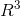
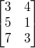

，其代表了一个二维的空间，其中空间中的值都是实数，你也可以看作是xy平面。同理，
，其代表了一个二维的空间，其中空间中的值都是实数，你也可以看作是xy平面。同理， 代表了一个n维的实数空间。
代表了一个n维的实数空间。
我们接下来看下空间的定义，什么才能叫作向量空间？
当空间中的任意向量相加或数乘（实数乘以向量）运算时，结果仍然在原来的空间里，这才能叫作向量空间，其是一个“封闭”的空间。同时有一点非常重要，向量空间永远都能经过零点（或零向量）。因为数乘运算时，你完全可以乘以0，得到的结果也一定是零点（或零向量）。
比如对于一个二维向量空间
，其可以想象成一个xy平面，而平面上任意向量相加或数乘的结果，仍然在这个平面上，这点是毋庸置疑的。
了解了向量空间后，我们再来看下子空间的概念。对于一个
的向量空间而言，其有多少种子空间？
1. 我们首先可以确定的是
本身就是其子空间，同时也是最大的子空间；
2. 其次我们能确定的是零向量(0,0)也是其一个子空间。首先其包含在
里面，其次其也符合空间的定义，无论相加或数乘都为(0,0)，所以其也算一个子空间，同时也是最小的子空间；
3. 我们先来考虑一个问题，其第一象限的空间算不算其一个子空间。其确实是包含在
里，空间里向量相加也是存在第一象限里，同样符合。但是如果数乘运算，你乘以一个负数，其位于第三象限里了，不再符合空间的定义，那么其很明显就不是一个子空间。
那么如果给一条穿过原点的直线y=kx，其算不算一个子空间。首先其包含在xy平面里，直线上的向量相加或数乘后结果也在直线上，所以其就是
一个子空间。
综上，
总共有3种子空间，而第3种子空间有无数个可能性存在。
接下来，我们再来考虑一个问题，对于
而言，其又有多少种子空间？
参照
的子空间求法，易得其有n+1种子空间，分别是经过零点的n维空间，经过零点的（n-1）维空间，……，经过零点的1维直线，零点本身。（注意，向量空间一定要经过零点！）
我们再提一个问题，如果S和T都是
的子空间，那么S和T的并集是不是一个子空间？
我们考虑下一个的向量空间，其有一个子空间是一个经过零点的平面，还有另一个子空间是一条经过零点的直线，那么这两个子空间的并集很明显不是该空间的子空间。因为如果一个向量在平面上，另一个向量在直线上，他们相加的结果可能不在这两个子空间里，所以其不是子空间。
所以S和T的并集不是一个子空间，但是S和T的交集是不是一个子空间？
如果任意两个向量X，Y存在S和T的交集中，那么X，Y的相加与数乘同样存在于S空间中（因为S是一个子空间），同时X，Y的相加与数乘也会同样存在于T空间中（因为T是一个子空间），那X，Y的相加与数乘的结果一定存在S和T的交集中！故得证S和T的交集是一个子空间！
聊完子空间后，我们再来看下向量空间跟矩阵怎么联系起来？
已知一个矩阵A:

之前在AX=b的解？略微有提过矩阵的列空间，行空间，其实这都是子空间的一种。我们这里主要看其列空间。对于矩阵A而言，其列空间是一个的二维子空间。为什么是，因为其列向量有3个元素。为什么是二维子空间，因为其列秩为2（秩的概念可以看AX=b的解？）。我们可以这么认为，矩阵的列空间是其所有列向量的全部线性组合的集合。那么这时我们可以重新审视下AX=b的问题，如果b点落在A的列空间里，那肯定有解，如果在A的列空间以外，那肯定无解。
而对于其行空间，是一个
的2维子空间，道理与列空间一致。
最后，我们来看一种特殊的子空间——零空间。其不再是矩阵上的向量的组合了，而是X的组合。矩阵的零空间是能让矩阵变成零向量的所有解的集合，即AX=0中X的全部解的集合。这里的内容有点多，我放到了另一篇文章来完成好了——AX=0？